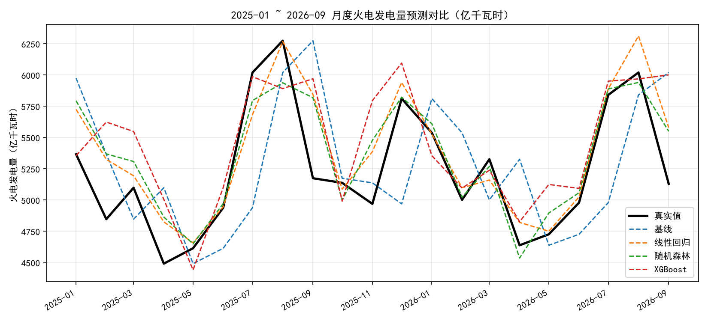
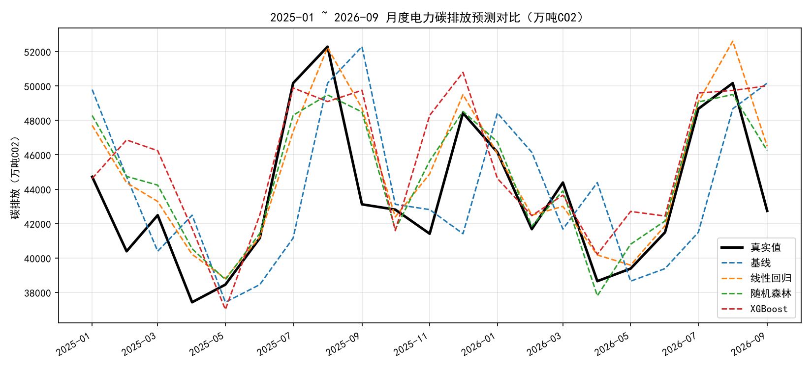
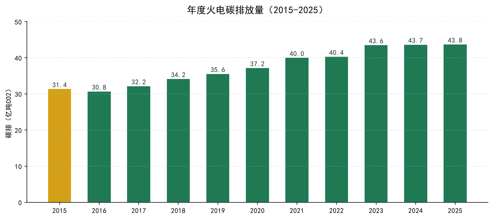

预测火电发电量 → 乘以排放因子 → 得到电力碳排放序列
碳排放 = 活动数据 × 排放因子。本项目以火电发电量为活动数据（非化石能源近零碳，只需预测火电即可闭环碳预测）。
thermal_lag1（上月）、thermal_lag12（去年同月，捕捉年周期）、month（月份）—— 仅 3 个特征shift 再滚动，杜绝未来数据TimeSeriesSplit(n_splits=3)，禁止默认 KFold 打乱时序1-2 月当期值缺失（统计局春节合并发布），用 2 月累计值按天数比例拆分还原——拿到的是真值合计，比插值可靠。solar 2016-05 才上线，建模窗口从 2017-01 起。
| 模型 | RMSE | MAE | MAPE |
|---|---|---|---|
| 基线（上月值） | 575.49 | 476.79 | 9.06% |
| 线性回归 | 276.08 | 202.14 | 3.92% |
| 随机森林 | 287.60 | 214.97 | 4.18% |
| XGBoost | 421.04 | 316.88 | 6.25% |
线性回归最优。约 100 个训练点 + 3 个特征，复杂模型（XGBoost）反而过拟合。预测火电比预测总发电量难（总发电量线性 MAPE 仅 2.24%），因火电受来水、煤价、检修影响波动大，总量有平滑效应。


碳排(万吨CO₂) = 火电(亿kWh) × 0.8333 × 10。排放因子取自生态环境部《2022 年电力二氧化碳排放因子公告》（化石能源电力因子，区别于电网平均 0.5366）。

| 年份 | 碳排 (亿吨CO₂) | 年份 | 碳排 (亿吨CO₂) |
|---|---|---|---|
| 2015 | 31.42 | 2021 | 40.05 |
| 2016 | 30.76 | 2022 | 40.36 |
| 2017 | 32.22 | 2023 | 43.57 |
| 2018 | 34.20 | 2024 | 43.71 |
| 2019 | 35.62 | 2025 | 43.78 |
| 2020 | 37.23 | 2026* | 30.55 |
* 2026 年仅 1-9 月数据，不可与完整年直接比较。